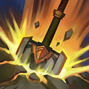
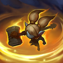
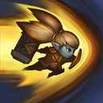

起手裝備
 紅水晶
紅水晶

缺前排時保留日炎＋寒冰霸拳坦克主線；新增三相＋突破天際鬥士變體，只供隊伍已有坦度且自己能持續近身普攻的場合。


五件成裝與鞋子分開列示；起手與核心是購買路線，不是額外佔用的成裝欄位。鞋子完成時機仍依對線壓力與回城金錢調整。


坦克主線保留冰霜霸主控制配套；鬥士變體相位衝擊配精準支系，追擊與離場優先，不將兩套符文零碎拼接。


閃現保留進場角度與撤退彈性，重擊維持打野必備。 本英雄以反位移坦克／壁咚控制／拆分團戰定位使用；7.3b不改重擊主動斬殺值，需看進化與充能。
加點優先：Q > E > W
同路參考支持Q>E>W，保留Q/E/W前三級與R在5/9/13級。
定期把圓盾當作遠程普攻投出；撿回圓盾可獲得護盾，適合安全換血。

重擊地面造成傷害與緩速，短暫延遲後再次爆炸，貼牆或控制後更容易吃滿。

被動提升雙防；主動加速並阻止附近敵人衝刺，成功攔截後會緩速與束縛。

推動敵人前進，若撞上牆體會造成額外傷害與暈眩。
短按可快速擊飛，蓄力則把敵人遠距擊退，能拆散陣型或移走敵方打野。
E 撞牆與 W 阻斷突進構成選角價值，日炎先確保清營，再用坦裝保排。已核對既有技能摘要、連招操作條件及前中後期說明；沒有足夠證據改寫其餘完整技能成長數值。
3技撞牆 → 1技 → 普攻 → 短按4技
確認牆面角度後用三技暈眩，讓一技兩段都命中，必要時短按大絕補控制。
2技 → 3技 → 1技
敵方突進時開二技攔截，接三技把目標推離後排，再用一技緩速。
蓄力4技 → 3技 → 1技
蓄力大絕先移走前排或打野，再壁咚剩餘目標，創造多打少。
一技兩段傷害能穩定清野，Gank 前先確認敵人與牆面的角度；三技只有撞牆才有完整控制。面對李星、卡蜜兒等位移英雄時，二技可用來反入侵和保護隊友。
日炎聖盾 → 寒冰霸拳成形後，再接荊棘之甲。保留日炎、寒冰霸拳與坦裝；二技反位移是選角理由，沒有牆角或隊友跟進時不硬追擊。 7.3b好戰之心需至少1250額外生命；好戰者本身700生命計入，不能把英雄基礎生命算進門檻。提前購買或替換生命裝時，先重新合計額外生命，不滿門檻不會取得該脫戰回血效果。
依敵方威脅選擇保排或開戰。對面刺客強時留在後排附近開二技；需要創造多打少時，蓄力大絕先移走前排再集中處理剩餘目標。
缺少新版同分路對局證據，保留野區機制名單，有利名單僅是既有機制判斷，排除與威脅重複者；波比入侵仍看兩側線權、血量及關鍵技能，不當作固定單挑勝率。
對局名單是機制與分路判斷，不代表固定勝率；需同時看雙方熟練度、兵線與陣容。
對方用移速或射程拉扯時不強求牆暈，改做反蹲與封鎖入口。
保留日炎、寒冰霸拳與坦裝；二技反位移是選角理由，沒有牆角或隊友跟進時不硬追擊。
移速疊起來後不要徒步硬追，控制留到能確實命中的位置。
別讓對手利用牆邊和普攻距離免費拉扯，先處理視野及隊友跟進。
二技針對可被攔截的衝刺；不要把影子換位、閃現或其他瞬移一律視為必定能擋。卡蜜兒與卡力斯亦須等對方實際衝刺進入範圍，這是機制窗口，不是固定對局勝率。
替換以本頁五件成裝為基準；同一格建議擇一。二、三級鞋是一條升級線，換鞋時整條同步；魔劍進化不占新欄位。
高
觸發：暴擊射手是主要威脅時替換末件，不以純生命代替物防。
好戰者鎧甲 → 蘭頓之兆
暴擊射手是主要威脅時替換末件，不以純生命代替物防。 替換生命裝後重新計算1250額外生命門檻，未達標則好戰之心不啟用。
暴擊射手是主要威脅時替換末件，不以純生命代替物防。
主動裝占成裝格；鞋子更換時整條升級路線一起更換。
高
觸發：持續魔法傷害令你無法站住時補魔防，必要時提前至第三件。
已帶此裝時保留；同一格多個建議擇一。
主動裝占成裝格；鞋子更換時整條升級路線一起更換。
高
觸發：敵方普攻與回復同時形成威脅時補重創，先確認觸發條件。
已帶此裝時保留；同一格多個建議擇一。
主動裝占成裝格；鞋子更換時整條升級路線一起更換。
高
觸發：自己有足夠坦度且隊友承傷壓力大時，以功能裝保護主力。
好戰者鎧甲 → 騎士誓願
自己有足夠坦度且隊友承傷壓力大時，以功能裝保護主力。 替換生命裝後重新計算1250額外生命門檻，未達標則好戰之心不啟用。
自己有足夠坦度且隊友承傷壓力大時，以功能裝保護主力。
主動裝占成裝格；鞋子更換時整條升級路線一起更換。
高
觸發：二級鞋改水星之靴，三級鞋對應鎖鏈軍靴；韌性不縮短擊飛。
鍍板鋼蓋 → 水星之靴
魔法傷害及可被韌性縮短的控制占主導時，鞋線整條改水星之靴→鎖鏈軍靴。 替換生命裝後重新計算1250額外生命門檻，未達標則好戰之心不啟用。
魔法傷害及可被韌性縮短的控制占主導時，鞋線整條改水星之靴→鎖鏈軍靴。
主動裝占成裝格；鞋子更換時整條升級路線一起更換。
己方已有可靠前排，且敵方多短程英雄，能持續近身普攻接技能；不是需要你單獨主坦的場合。


長劍起手，三相→突破天際後補坦度；魔法威脅低時鞋線可整條改鍍板→裝甲。此變體偏近身換血，不保證比日炎主線更快清野；不帶輔助任務裝，不套用主線好戰者1250門檻描述。
7.3d差異核對：本頁核對官方英雄／裝備差異與現行配置參照；未列的技能不表示已完成逐級實測。查看校正範圍。
本頁校正版本：7.3d；校正日期：2026-10-25。
參考來源標示版本：7.3c
本輪核對官方版本差異、道具/符文引用、五成裝與鞋線、逐級加點及情境替換一致性。Tier及玩法屬本站編輯判斷，不是官方排名或台服勝率；未公開的全級技能表不推算。
評級理由：7.3c 維持 A（本站判斷）。本站A以反衝刺選角價值為依據，並非所有對局都優勢；撞牆角度與隊友跟進不足，或對手靠射程／跑速拉扯時，不能硬追。移除把劫、伊芙琳整體視為W有利對局的誤導。 7.3c 未改動此分路的英雄數值，沒有新證據只因版本號而升降。
Riot 官方資料 ↗ · Riot 官方資料 ↗ · Riot 官方資料 ↗ · Riot 官方資料 ↗ · Riot 官方資料 ↗ · WildRiftFire 參考攻略 ↗ · wr-meta.com ↗ · Riot 官方資料 ↗
7.3c 的直接英雄倍率改動屬符文大亂鬥；本召喚峽谷配置承接 7.3b。未把模式專屬增削轉為峽谷增削。
五件成裝、獨立鞋線、起手、核心、情境替換引用與一般符文列別均重新檢查；移除裝備不列入當前推薦。
歷史資料有後續調整時，以較新版本數值為準。
| 項目 | 調整前 | 調整後 |
|---|---|---|
| 基礎生命 | 660 | 630 |
| 每級生命成長 | 128 | 136 |